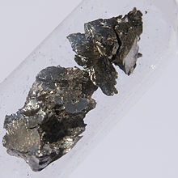

Praseodymium
|
|
This article needs additional citations for verification. (April 2012) |
|  | |||||||||||||||||||||||||||||||||||||||||||||||||||||||||||||||||||||||||||||||||||||||||||||||||||||||||||||||||||||||||||||||||||||||||||||||||||||||||||||||||||||||||||||||||||||||||||||||||||||||||||||||||||||||||||||||||||||
| General properties | |||||||||||||||||||||||||||||||||||||||||||||||||||||||||||||||||||||||||||||||||||||||||||||||||||||||||||||||||||||||||||||||||||||||||||||||||||||||||||||||||||||||||||||||||||||||||||||||||||||||||||||||||||||||||||||||||||||
|---|---|---|---|---|---|---|---|---|---|---|---|---|---|---|---|---|---|---|---|---|---|---|---|---|---|---|---|---|---|---|---|---|---|---|---|---|---|---|---|---|---|---|---|---|---|---|---|---|---|---|---|---|---|---|---|---|---|---|---|---|---|---|---|---|---|---|---|---|---|---|---|---|---|---|---|---|---|---|---|---|---|---|---|---|---|---|---|---|---|---|---|---|---|---|---|---|---|---|---|---|---|---|---|---|---|---|---|---|---|---|---|---|---|---|---|---|---|---|---|---|---|---|---|---|---|---|---|---|---|---|---|---|---|---|---|---|---|---|---|---|---|---|---|---|---|---|---|---|---|---|---|---|---|---|---|---|---|---|---|---|---|---|---|---|---|---|---|---|---|---|---|---|---|---|---|---|---|---|---|---|---|---|---|---|---|---|---|---|---|---|---|---|---|---|---|---|---|---|---|---|---|---|---|---|---|---|---|---|---|---|---|---|---|---|---|---|---|---|---|---|---|---|---|---|---|---|---|---|---|
| Name, symbol | praseodymium, Pr | ||||||||||||||||||||||||||||||||||||||||||||||||||||||||||||||||||||||||||||||||||||||||||||||||||||||||||||||||||||||||||||||||||||||||||||||||||||||||||||||||||||||||||||||||||||||||||||||||||||||||||||||||||||||||||||||||||||
| Pronunciation | /preɪziːəˈdɪmiəm/[1] pray-zee-ə-DIM-ee-əm |
||||||||||||||||||||||||||||||||||||||||||||||||||||||||||||||||||||||||||||||||||||||||||||||||||||||||||||||||||||||||||||||||||||||||||||||||||||||||||||||||||||||||||||||||||||||||||||||||||||||||||||||||||||||||||||||||||||
| Appearance | grayish white | ||||||||||||||||||||||||||||||||||||||||||||||||||||||||||||||||||||||||||||||||||||||||||||||||||||||||||||||||||||||||||||||||||||||||||||||||||||||||||||||||||||||||||||||||||||||||||||||||||||||||||||||||||||||||||||||||||||
| Praseodymium in the periodic table | |||||||||||||||||||||||||||||||||||||||||||||||||||||||||||||||||||||||||||||||||||||||||||||||||||||||||||||||||||||||||||||||||||||||||||||||||||||||||||||||||||||||||||||||||||||||||||||||||||||||||||||||||||||||||||||||||||||
|
|||||||||||||||||||||||||||||||||||||||||||||||||||||||||||||||||||||||||||||||||||||||||||||||||||||||||||||||||||||||||||||||||||||||||||||||||||||||||||||||||||||||||||||||||||||||||||||||||||||||||||||||||||||||||||||||||||||
| Atomic number | 59 | ||||||||||||||||||||||||||||||||||||||||||||||||||||||||||||||||||||||||||||||||||||||||||||||||||||||||||||||||||||||||||||||||||||||||||||||||||||||||||||||||||||||||||||||||||||||||||||||||||||||||||||||||||||||||||||||||||||
| Standard atomic weight (±) | 140.90766(2)[2] | ||||||||||||||||||||||||||||||||||||||||||||||||||||||||||||||||||||||||||||||||||||||||||||||||||||||||||||||||||||||||||||||||||||||||||||||||||||||||||||||||||||||||||||||||||||||||||||||||||||||||||||||||||||||||||||||||||||
| Element category | lanthanide | ||||||||||||||||||||||||||||||||||||||||||||||||||||||||||||||||||||||||||||||||||||||||||||||||||||||||||||||||||||||||||||||||||||||||||||||||||||||||||||||||||||||||||||||||||||||||||||||||||||||||||||||||||||||||||||||||||||
| Group, block | group n/a, f-block | ||||||||||||||||||||||||||||||||||||||||||||||||||||||||||||||||||||||||||||||||||||||||||||||||||||||||||||||||||||||||||||||||||||||||||||||||||||||||||||||||||||||||||||||||||||||||||||||||||||||||||||||||||||||||||||||||||||
| Period | period 6 | ||||||||||||||||||||||||||||||||||||||||||||||||||||||||||||||||||||||||||||||||||||||||||||||||||||||||||||||||||||||||||||||||||||||||||||||||||||||||||||||||||||||||||||||||||||||||||||||||||||||||||||||||||||||||||||||||||||
| Electron configuration | [Xe] 4f3 6s2 | ||||||||||||||||||||||||||||||||||||||||||||||||||||||||||||||||||||||||||||||||||||||||||||||||||||||||||||||||||||||||||||||||||||||||||||||||||||||||||||||||||||||||||||||||||||||||||||||||||||||||||||||||||||||||||||||||||||
| per shell | 2, 8, 18, 21, 8, 2 | ||||||||||||||||||||||||||||||||||||||||||||||||||||||||||||||||||||||||||||||||||||||||||||||||||||||||||||||||||||||||||||||||||||||||||||||||||||||||||||||||||||||||||||||||||||||||||||||||||||||||||||||||||||||||||||||||||||
| Physical properties | |||||||||||||||||||||||||||||||||||||||||||||||||||||||||||||||||||||||||||||||||||||||||||||||||||||||||||||||||||||||||||||||||||||||||||||||||||||||||||||||||||||||||||||||||||||||||||||||||||||||||||||||||||||||||||||||||||||
| Phase | solid | ||||||||||||||||||||||||||||||||||||||||||||||||||||||||||||||||||||||||||||||||||||||||||||||||||||||||||||||||||||||||||||||||||||||||||||||||||||||||||||||||||||||||||||||||||||||||||||||||||||||||||||||||||||||||||||||||||||
| Melting point | 1208 K (935 °C, 1715 °F) | ||||||||||||||||||||||||||||||||||||||||||||||||||||||||||||||||||||||||||||||||||||||||||||||||||||||||||||||||||||||||||||||||||||||||||||||||||||||||||||||||||||||||||||||||||||||||||||||||||||||||||||||||||||||||||||||||||||
| Boiling point | 3403 K (3130 °C, 5666 °F) | ||||||||||||||||||||||||||||||||||||||||||||||||||||||||||||||||||||||||||||||||||||||||||||||||||||||||||||||||||||||||||||||||||||||||||||||||||||||||||||||||||||||||||||||||||||||||||||||||||||||||||||||||||||||||||||||||||||
| Density near r.t. | 6.77 g·cm−3 | ||||||||||||||||||||||||||||||||||||||||||||||||||||||||||||||||||||||||||||||||||||||||||||||||||||||||||||||||||||||||||||||||||||||||||||||||||||||||||||||||||||||||||||||||||||||||||||||||||||||||||||||||||||||||||||||||||||
| when liquid, at m.p. | 6.50 g·cm−3 | ||||||||||||||||||||||||||||||||||||||||||||||||||||||||||||||||||||||||||||||||||||||||||||||||||||||||||||||||||||||||||||||||||||||||||||||||||||||||||||||||||||||||||||||||||||||||||||||||||||||||||||||||||||||||||||||||||||
| Heat of fusion | 6.89 kJ·mol−1 | ||||||||||||||||||||||||||||||||||||||||||||||||||||||||||||||||||||||||||||||||||||||||||||||||||||||||||||||||||||||||||||||||||||||||||||||||||||||||||||||||||||||||||||||||||||||||||||||||||||||||||||||||||||||||||||||||||||
| Heat of vaporization | 331 kJ·mol−1 | ||||||||||||||||||||||||||||||||||||||||||||||||||||||||||||||||||||||||||||||||||||||||||||||||||||||||||||||||||||||||||||||||||||||||||||||||||||||||||||||||||||||||||||||||||||||||||||||||||||||||||||||||||||||||||||||||||||
| Molar heat capacity | 27.20 J·mol−1·K−1 | ||||||||||||||||||||||||||||||||||||||||||||||||||||||||||||||||||||||||||||||||||||||||||||||||||||||||||||||||||||||||||||||||||||||||||||||||||||||||||||||||||||||||||||||||||||||||||||||||||||||||||||||||||||||||||||||||||||
vapor pressure
|
|||||||||||||||||||||||||||||||||||||||||||||||||||||||||||||||||||||||||||||||||||||||||||||||||||||||||||||||||||||||||||||||||||||||||||||||||||||||||||||||||||||||||||||||||||||||||||||||||||||||||||||||||||||||||||||||||||||
| Atomic properties | |||||||||||||||||||||||||||||||||||||||||||||||||||||||||||||||||||||||||||||||||||||||||||||||||||||||||||||||||||||||||||||||||||||||||||||||||||||||||||||||||||||||||||||||||||||||||||||||||||||||||||||||||||||||||||||||||||||
| Oxidation states | 4, 3, 2 (a mildly basic oxide) | ||||||||||||||||||||||||||||||||||||||||||||||||||||||||||||||||||||||||||||||||||||||||||||||||||||||||||||||||||||||||||||||||||||||||||||||||||||||||||||||||||||||||||||||||||||||||||||||||||||||||||||||||||||||||||||||||||||
| Electronegativity | Pauling scale: 1.13 | ||||||||||||||||||||||||||||||||||||||||||||||||||||||||||||||||||||||||||||||||||||||||||||||||||||||||||||||||||||||||||||||||||||||||||||||||||||||||||||||||||||||||||||||||||||||||||||||||||||||||||||||||||||||||||||||||||||
| Ionization energies | 1st: 527 kJ·mol−1 2nd: 1020 kJ·mol−1 3rd: 2086 kJ·mol−1 |
||||||||||||||||||||||||||||||||||||||||||||||||||||||||||||||||||||||||||||||||||||||||||||||||||||||||||||||||||||||||||||||||||||||||||||||||||||||||||||||||||||||||||||||||||||||||||||||||||||||||||||||||||||||||||||||||||||
| Atomic radius | empirical: 182 pm | ||||||||||||||||||||||||||||||||||||||||||||||||||||||||||||||||||||||||||||||||||||||||||||||||||||||||||||||||||||||||||||||||||||||||||||||||||||||||||||||||||||||||||||||||||||||||||||||||||||||||||||||||||||||||||||||||||||
| Covalent radius | 203±7 pm | ||||||||||||||||||||||||||||||||||||||||||||||||||||||||||||||||||||||||||||||||||||||||||||||||||||||||||||||||||||||||||||||||||||||||||||||||||||||||||||||||||||||||||||||||||||||||||||||||||||||||||||||||||||||||||||||||||||
| Miscellanea | |||||||||||||||||||||||||||||||||||||||||||||||||||||||||||||||||||||||||||||||||||||||||||||||||||||||||||||||||||||||||||||||||||||||||||||||||||||||||||||||||||||||||||||||||||||||||||||||||||||||||||||||||||||||||||||||||||||
| Crystal structure | double hexagonal close-packed (dhcp)
 |
||||||||||||||||||||||||||||||||||||||||||||||||||||||||||||||||||||||||||||||||||||||||||||||||||||||||||||||||||||||||||||||||||||||||||||||||||||||||||||||||||||||||||||||||||||||||||||||||||||||||||||||||||||||||||||||||||||
| Speed of sound thin rod | 2280 m·s−1 (at 20 °C) | ||||||||||||||||||||||||||||||||||||||||||||||||||||||||||||||||||||||||||||||||||||||||||||||||||||||||||||||||||||||||||||||||||||||||||||||||||||||||||||||||||||||||||||||||||||||||||||||||||||||||||||||||||||||||||||||||||||
| Thermal expansion | α, poly: 6.7 µm·m−1·K−1 (at r.t.) | ||||||||||||||||||||||||||||||||||||||||||||||||||||||||||||||||||||||||||||||||||||||||||||||||||||||||||||||||||||||||||||||||||||||||||||||||||||||||||||||||||||||||||||||||||||||||||||||||||||||||||||||||||||||||||||||||||||
| Thermal conductivity | 12.5 W·m−1·K−1 | ||||||||||||||||||||||||||||||||||||||||||||||||||||||||||||||||||||||||||||||||||||||||||||||||||||||||||||||||||||||||||||||||||||||||||||||||||||||||||||||||||||||||||||||||||||||||||||||||||||||||||||||||||||||||||||||||||||
| Electrical resistivity | α, poly: 0.700 µΩ·m (at r.t.) | ||||||||||||||||||||||||||||||||||||||||||||||||||||||||||||||||||||||||||||||||||||||||||||||||||||||||||||||||||||||||||||||||||||||||||||||||||||||||||||||||||||||||||||||||||||||||||||||||||||||||||||||||||||||||||||||||||||
| Magnetic ordering | paramagnetic[3] | ||||||||||||||||||||||||||||||||||||||||||||||||||||||||||||||||||||||||||||||||||||||||||||||||||||||||||||||||||||||||||||||||||||||||||||||||||||||||||||||||||||||||||||||||||||||||||||||||||||||||||||||||||||||||||||||||||||
| Young's modulus | α form: 37.3 GPa | ||||||||||||||||||||||||||||||||||||||||||||||||||||||||||||||||||||||||||||||||||||||||||||||||||||||||||||||||||||||||||||||||||||||||||||||||||||||||||||||||||||||||||||||||||||||||||||||||||||||||||||||||||||||||||||||||||||
| Shear modulus | α form: 14.8 GPa | ||||||||||||||||||||||||||||||||||||||||||||||||||||||||||||||||||||||||||||||||||||||||||||||||||||||||||||||||||||||||||||||||||||||||||||||||||||||||||||||||||||||||||||||||||||||||||||||||||||||||||||||||||||||||||||||||||||
| Bulk modulus | α form: 28.8 GPa | ||||||||||||||||||||||||||||||||||||||||||||||||||||||||||||||||||||||||||||||||||||||||||||||||||||||||||||||||||||||||||||||||||||||||||||||||||||||||||||||||||||||||||||||||||||||||||||||||||||||||||||||||||||||||||||||||||||
| Poisson ratio | α form: 0.281 | ||||||||||||||||||||||||||||||||||||||||||||||||||||||||||||||||||||||||||||||||||||||||||||||||||||||||||||||||||||||||||||||||||||||||||||||||||||||||||||||||||||||||||||||||||||||||||||||||||||||||||||||||||||||||||||||||||||
| Vickers hardness | 250–745 MPa | ||||||||||||||||||||||||||||||||||||||||||||||||||||||||||||||||||||||||||||||||||||||||||||||||||||||||||||||||||||||||||||||||||||||||||||||||||||||||||||||||||||||||||||||||||||||||||||||||||||||||||||||||||||||||||||||||||||
| Brinell hardness | 250–640 MPa | ||||||||||||||||||||||||||||||||||||||||||||||||||||||||||||||||||||||||||||||||||||||||||||||||||||||||||||||||||||||||||||||||||||||||||||||||||||||||||||||||||||||||||||||||||||||||||||||||||||||||||||||||||||||||||||||||||||
| CAS Registry Number | 7440-10-0 | ||||||||||||||||||||||||||||||||||||||||||||||||||||||||||||||||||||||||||||||||||||||||||||||||||||||||||||||||||||||||||||||||||||||||||||||||||||||||||||||||||||||||||||||||||||||||||||||||||||||||||||||||||||||||||||||||||||
| History | |||||||||||||||||||||||||||||||||||||||||||||||||||||||||||||||||||||||||||||||||||||||||||||||||||||||||||||||||||||||||||||||||||||||||||||||||||||||||||||||||||||||||||||||||||||||||||||||||||||||||||||||||||||||||||||||||||||
| Discovery | Carl Auer von Welsbach (1885) | ||||||||||||||||||||||||||||||||||||||||||||||||||||||||||||||||||||||||||||||||||||||||||||||||||||||||||||||||||||||||||||||||||||||||||||||||||||||||||||||||||||||||||||||||||||||||||||||||||||||||||||||||||||||||||||||||||||
| Most stable isotopes | |||||||||||||||||||||||||||||||||||||||||||||||||||||||||||||||||||||||||||||||||||||||||||||||||||||||||||||||||||||||||||||||||||||||||||||||||||||||||||||||||||||||||||||||||||||||||||||||||||||||||||||||||||||||||||||||||||||
|
|||||||||||||||||||||||||||||||||||||||||||||||||||||||||||||||||||||||||||||||||||||||||||||||||||||||||||||||||||||||||||||||||||||||||||||||||||||||||||||||||||||||||||||||||||||||||||||||||||||||||||||||||||||||||||||||||||||
| Decay modes in parentheses have been predicted, but have not yet been observed | |||||||||||||||||||||||||||||||||||||||||||||||||||||||||||||||||||||||||||||||||||||||||||||||||||||||||||||||||||||||||||||||||||||||||||||||||||||||||||||||||||||||||||||||||||||||||||||||||||||||||||||||||||||||||||||||||||||
{kind=link}
Praseodymium is a chemical element with symbol Pr and atomic number 59. Praseodymium is a soft, silvery, malleable and ductile metal in the lanthanide group. It is valued for its magnetic, electrical, chemical, and optical properties.[4] It is too reactive to be found in native form, and when artificially prepared, it slowly develops a green oxide coating.
The element was named for the color of its primary oxide. In 1841, Swedish chemist Carl Gustav Mosander extracted a rare earth oxide residue he called "didymium" from a residue he called "lantana", in turn separated from cerium salts. In 1885, the Austrian chemist Baron Carl Auer von Welsbach separated didymium into two salts of different colors, which he named praseodymium and neodymium. The name praseodymium comes from the Greek prasinos (πράσινος), meaning "green", and didymos (δίδυμος), "twin".
Like most rare earth elements, praseodymium most readily forms trivalent Pr(III) ions. These are yellow-green in water solution, and various shades of yellow-green when incorporated into glasses. Many of praseodymium's industrial uses involve its use to filter yellow light from light sources.
Contents
[hide]Characteristics[edit]
Physical properties[edit]
Praseodymium is a soft, silvery, malleable, and ductile metal in the lanthanide group. It is somewhat more resistant to corrosion in air than europium, lanthanum, cerium, or neodymium, but it does develop a green oxide coating that spalls off when exposed to air, exposing more metal to oxidation—a centimeter-sized sample of Pr completely oxidizes within a year.[5] For this reason, praseodymium is usually stored under a light mineral oil or sealed in glass.
Unlike other rare-earth metals, which show antiferromagnetic or/and ferromagnetic ordering at low temperatures, Pr is paramagnetic at any temperature above 1 K.[3]
Chemical properties[edit]
Praseodymium metal tarnishes slowly in air and burns readily at 150 °C to form praseodymium(III,IV) oxide:
- 12 Pr + 11 O2 → 2 Pr6O11
Praseodymium is quite electropositive and reacts slowly with cold water and quite quickly with hot water to form praseodymium hydroxide:
- 2 Pr (s) + 6 H2O (l) → 2 Pr(OH)3 (aq) + 3 H2 (g)
Praseodymium metal reacts with all the halogens:
- 2 Pr (s) + 3 F2 (g) → 2 PrF3 (s) [green]
- 2 Pr (s) + 3 Cl2 (g) → 2 PrCl3 (s) [green]
- 2 Pr (s) + 3 Br2 (g) → 2 PrBr3 (s) [green]
- 2 Pr (s) + 3 I2 (g) → 2 PrI3 (s) [green]
Praseodymium dissolves readily in dilute sulfuric acid to form solutions containing green Pr(III) ions, which exist as a [Pr(OH2)9]3+ complexes:[6]
- 2 Pr (s) + 3 H2SO4 (aq) → 2 Pr3+(aq) + 3 SO2−
4 (aq) + 3 H2 (g)
Compounds[edit]
In its compounds, praseodymium occurs in oxidation states +2, +3 and/or +4. Praseodymium(IV) is a strong oxidant, instantly oxidizing water to elemental oxygen (O2), or hydrochloric acid to elemental chlorine. Thus, in aqueous solution, only the +3 oxidation state is encountered. Praseodymium(III) salts are yellow-green and, in solution, present a fairly simple absorption spectrum in the visible region, with a band in the yellow-orange at 589–590 nm (which coincides with the sodium emission doublet), and three bands in the blue/violet region, at 444, 468, and 482 nm, approximately. These positions vary slightly with the counter-ion. Praseodymium oxide, as obtained by the ignition of salts such as the oxalate or carbonate in air, is essentially black in color (with a hint of brown or green) and contains +3 and +4 praseodymium in a somewhat variable ratio, depending upon the conditions of formation. Its formula is conventionally rendered as Pr6O11.
Other praseodymium compounds include:
- Fluorides: PrF2, PrF3, PrF4
- Chlorides: PrCl3
- Bromides: PrBr3, Pr2Br5
- Iodides: PrI2, PrI3, Pr2I5
- Oxides: PrO2, Pr2O3, Pr6O11
- Sulfides: PrS, Pr2S3
- Sulfates: Pr2(SO4)3
- Selenides: PrSe
- Tellurides: PrTe, Pr2Te3
- Nitrides: PrN
- Carbonates: Pr2(CO3)3[7]
Isotopes[edit]
Naturally occurring praseodymium is composed of one stable isotope, praseodymium-141,[8] which is of use in NMR and EPR spectroscopy.[9] 38 radioisotopes have been characterized, with the most stable being praseodymium-143 with a half-life of 13.57 days and praseodymium-142 with a half-life of 19.12 hours.[8] All of the remaining radioactive isotopes have half-lives that are less than six hours, and the majority of these have half lives that are less than 10 minutes.[8] This element also has 15 nuclear isomers, with the longest-lived being praseodymium-138m, praseodymium-134m, and praseodymium-142m.[8] The nuclei of nuclear isomers exist in a delicate equilibrium or metastability due to at least one nucleon having an excited energy state.
The isotopes of praseodymium range in mass number from 121 to 159.[8] The most common decay mode of 20 isotopes with mass numbers lower than the most abundant stable isotope, praseodymium-141 is β+ decay, primarily forming cerium isotopes (58 protons) as decay products.[8] The most common decay mode for 18 isotopes with mass numbers higher than praseodymium-141 is β− decay, primarily forming neodymium isotopes (60 protons) as decay products.[8]
History[edit]
{kind=link}
In 1839 Mosander extracted an oxide he called "lantana" (see lanthana), which was the oxide of the newly discovered element lanthanum, from a mixture of crude cerium nitrate. In 1841, Mosander went on to show that "lantana" was the most strongly basic of a mixture of rare earth element oxides and was the last to be precipitated from acid solution when base was added, or the first to be dissolved when the mixed oxides were leached with dilute acid. The remaining less-basic rare earth(s) retained the pinkish color, and Mosander called this remaining fraction "didymium". In 1874, Per Teodor Cleve concluded that didymium was in fact two elements, and in 1879, Lecoq de Boisbaudran isolated a new earth, samarium, from "didymium" obtained from the mineral samarskite. Crude didymium actually contained three elements, and in 1885, the Austrian chemist baron Carl Auer von Welsbach separated didymium into two elements, praseodymium and neodymium, which gave salts of different colors.
The name praseodymium comes from the Greek prasinos (πράσινος), meaning "green", and didymos (δίδυμος), "twin". Praseodymium is frequently misspelled as praseodynium.
Leo Moser (son of Ludwig Moser, founder of the Moser Glassworks in what is now Karlovy Vary, Bohemia, in the Czech Republic, not to be confused with Leo Moser, a mathematician) investigated the use of praseodymium in glass coloration in the late 1920s. The result was a yellow-green glass given the name "Prasemit". However, a similar color could be achieved with colorants costing only a minute fraction of what praseodymium cost in the late 1920s, such that the color was not popular, few pieces were made, and examples are now extremely rare. Moser also blended praseodymium with neodymium to produce "Heliolite" glass ("Heliolit" in German), which was more widely accepted. The first enduring commercial use of purified praseodymium, which continues today, is in the form of a yellow-orange stain for ceramics, "Praseodymium Yellow", which is a solid-solution of praseodymium in the zirconium silicate (zircon) lattice. This stain has no hint of green in it. By contrast, at sufficiently high loadings, praseodymium glass is distinctly green, rather than pure yellow.[10]
Using classical separation methods, praseodymium was always difficult to purify. Much less abundant than the lanthanum and neodymium from which it was being separated (cerium having long since been removed by redox chemistry), praseodymium ended up being dispersed among a large number of fractions, and the resulting yields of purified material were low. Praseodymium has historically been a rare earth whose supply has exceeded demand. This has occasionally led to its being offered more cheaply than the far more abundant neodymium. Unwanted as such, much praseodymium has been marketed as a mixture with lanthanum and cerium, or "LCP" for the first letters of each of the constituents, for use in replacing the traditional lanthanide mixtures that were inexpensively made from monazite or bastnäsite. LCP is what remains of such mixtures, after the desirable neodymium, and all the heavier, rarer and more valuable lanthanides have been removed, by solvent extraction. However, as technology progresses, it has been found that praseodymium can be incorporated into neodymium-iron-boron magnets, thereby extending the supply of the much in demand neodymium[citation needed]. So LC is starting to replace LCP as a result.
In the 1930s it was found (Beck) that praseodymium dioxide could be precipitated from KOH/NaOH eutectic melts, by oxidation by electrochemistry, or by sodium chlorate. This formed the basis of a small-scale laboratory purification method. The relatively pure free metal itself was not prepared until 1931.
Occurrence[edit]
{kind=link}
Praseodymium occurs in small quantities in Earth's crust (9.5 ppm). It is found in the rare earth minerals monazite and bastnäsite, typically comprising about 5% of the lanthanides contained therein, and can be recovered from these minerals by an ion exchange process, or by counter-current solvent extraction. Mischmetal, used in making cigarette lighters, historically contained about 5% praseodymium metal.[11]
Praseodymium makes up an average of 8 parts per million of soil's dry weight, though the element's concentration there can be as low as 1 part per million or as high as 15 parts per million. Praseodymium makes up 1 part per trillion of seawater. There is almost no praseodymium in the atmosphere.[12]
Applications[edit]
{kind=link}
Uses of praseodymium:
- In combination with neodymium, another rare earth element, praseodymium is used to create high-power magnets notable for their strength and durability.[4]
- As an alloying agent with magnesium to create high-strength metals that are used in aircraft engines.[13][14]
- Praseodymium makes up 5 percent of the traditional version of mischmetal.
- Praseodymium is present in the rare earth mixture whose fluoride forms the core of carbon arc lights which are used in the motion picture industry for studio lighting and projector lights.
- Praseodymium compounds give glasses and enamels a yellow color.[15]
- Praseodymium is used to color cubic zirconia yellow-green, to simulate the mineral peridot.
- Praseodymium is a component of didymium glass, which is used to make certain types of welder's and glass blower's goggles.[15]
- Silicate crystals doped with praseodymium ions have been used to slow a light pulse down to a few hundred meters per second.[16]
- Praseodymium alloyed with nickel (PrNi5) has such a strong magnetocaloric effect that it has allowed scientists to approach within one thousandth of a degree of absolute zero.[17]
- Doping praseodymium in fluoride glass allows it to be used as a single mode fiber optical amplifier.[18]
- Praseodymium oxide in solid solution with ceria, or with ceria-zirconia, have been used as oxidation catalysts.[19]
- Modern ferrocerium firesteel products, commonly referred to as "flint", used in lighters, torch strikers, "flint and steel" fire starters, etc., contain around 4% praseodymium.[15]
Precautions[edit]
Like all rare earth metals, praseodymium is of low to moderate toxicity. Praseodymium has no known biological role.
References[edit]
- Jump up ^ "praseodymium". Oxford English Dictionary (3rd ed.). Oxford University Press. September 2005.
- Jump up ^ Standard Atomic Weights 2013. Commission on Isotopic Abundances and Atomic Weights
- ^ Jump up to: a b Jackson, M. (2000). "Magnetism of Rare Earth" (PDF). The IRM quarterly 10 (3): 1.
- ^ Jump up to: a b Rare Earth Elements 101, IAMGOLD Corporation, April 2012, pp. 5, 7.
- Jump up ^ "Rare-Earth Metal Long Term Air Exposure Test". Retrieved 2009-08-08.
- Jump up ^ "Chemical reactions of Praseodymium". Webelements. Retrieved 2009-06-06.
- Jump up ^ "Praseodymium(III) carbonate hydrate 99.99%". Sigma-Aldrich Co. LLC. Retrieved 18 December 2014.
- ^ Jump up to: a b c d e f g NNDC contributors (2008). Alejandro A. Sonzogni (Database Manager), ed. "Chart of Nuclides". Upton (NY): National Nuclear Data Center, Brookhaven National Laboratory. Retrieved 2008-09-13.
- Jump up ^ http://www.nyu.edu/cgi-bin/cgiwrap/aj39/NMRmap.cgi
- Jump up ^ Kreidl, Norbert J. (1942). "RARE EARTHS*". Journal of the American Ceramic Society 25 (5): 141. doi:10.1111/j.1151-2916.1942.tb14363.x.
- Jump up ^ Gschneidner, K.A., and Eyring, L., Handbook on the Physics and Chemistry of Rare Earths, North Holland Publishing Co., Amsterdam, 1978.
- Jump up ^ Emsley, John (2011). Nature's Building Blocks.
- Jump up ^ L. L. Rokhlin (2003). Magnesium alloys containing rare earth metals: structure and properties. CRC Press. ISBN 0-415-28414-7.
- Jump up ^ Suseelan Nair, K.; Mittal, M.C. (1988). "Rare Earths in Magnesium Alloys". Materials Science Forum 30: 89. doi:10.4028/www.scientific.net/MSF.30.89.
- ^ Jump up to: a b c C. R. Hammond (2000). The Elements, in Handbook of Chemistry and Physics (81st ed.). CRC press. ISBN 0-8493-0481-4.
- Jump up ^ "ANU team stops light in quantum leap". Retrieved 18 May 2009.
- Jump up ^ Emsley, John (2001). Nature's building blocks. Oxford University Press. p. 342. ISBN 0-19-850341-5.
- Jump up ^ Jha, A; Naftaly, M; Jordery, S; Samson, B N et al. (1995). "Design and fabrication of Pr3+-doped fluoride glass optical fibres for efficient 1.3 mu m amplifiers". Pure and Applied Optics: Journal of the European Optical Society Part A 4 (4): 417. Bibcode:1995PApOp...4..417J. doi:10.1088/0963-9659/4/4/019.
- Jump up ^ Borchert, Y.; Sonstrom, P.; Wilhelm, M.; Borchert, H. et al. (2008). "Nanostructured Praseodymium Oxide: Preparation, Structure, and Catalytic Properties". Journal of Physical Chemistry C 112 (8): 3054. doi:10.1021/jp0768524.
Further reading[edit]
- R. J. Callow, The Industrial Chemistry of the Lanthanons, Yttrium, Thorium and Uranium, Pergamon Press, 1967.
External links[edit]
| Wikimedia Commons has media related to Praseodymium. |
| Look up praseodymium in Wiktionary, the free dictionary. |
| [hide] Periodic table (Large cells) | |||||||||||||||||||||||||||||||||
|---|---|---|---|---|---|---|---|---|---|---|---|---|---|---|---|---|---|---|---|---|---|---|---|---|---|---|---|---|---|---|---|---|---|
| 1 | 2 | 3 | 4 | 5 | 6 | 7 | 8 | 9 | 10 | 11 | 12 | 13 | 14 | 15 | 16 | 17 | 18 | ||||||||||||||||
| 1 | H | He | |||||||||||||||||||||||||||||||
| 2 | Li | Be | B | C | N | O | F | Ne | |||||||||||||||||||||||||
| 3 | Na | Mg | Al | Si | P | S | Cl | Ar | |||||||||||||||||||||||||
| 4 | K | Ca | Sc | Ti | V | Cr | Mn | Fe | Co | Ni | Cu | Zn | Ga | Ge | As | Se | Br | Kr | |||||||||||||||
| 5 | Rb | Sr | Y | Zr | Nb | Mo | Tc | Ru | Rh | Pd | Ag | Cd | In | Sn | Sb | Te | I | Xe | |||||||||||||||
| 6 | Cs | Ba | La | Ce | Pr | Nd | Pm | Sm | Eu | Gd | Tb | Dy | Ho | Er | Tm | Yb | Lu | Hf | Ta | W | Re | Os | Ir | Pt | Au | Hg | Tl | Pb | Bi | Po | At | Rn | |
| 7 | Fr | Ra | Ac | Th | Pa | U | Np | Pu | Am | Cm | Bk | Cf | Es | Fm | Md | No | Lr | Rf | Db | Sg | Bh | Hs | Mt | Ds | Rg | Cn | 113 | Fl | 115 | Lv | 117 | 118 | |
|
|
|||||||||||||||||||||||||||||||||
|
||